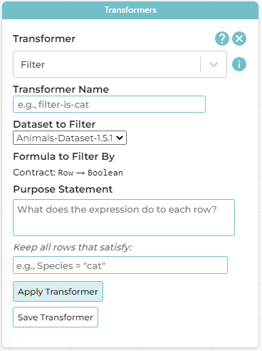

More Transformers: Filter, Transform, Build
Students learn more about Transformers, including Filter, Transform Attribute, Build Attribute.
|
Lesson Goals |
Students will be able to…
|
|
Student-facing Lesson Goals |
|
|
Materials |
| Filtering Tables | 20 minutes |
Overview
Students learn how to filter tables by removing Rows.
Launch
Announce to the class that you are going to select 6-8 students, each of whom will represent a unique Row of a dataset called “Students.” Arrange them in a line at the front of the room. (You may need to choose your students strategically. The demonstration, for instance, requires at least one student who wears glasses.)
Tell the class that you are going to select a volunteer who will play the role of… The Filter Transformer!
Hand the Filter Transformer a card from the Expression Cards set. Publicly tell that student that this is their expression. Instruct Filter to read the card carefully, making sure they understand what it will do for each "Row" (student!) in the "Table" (line of students), but to keep that information a secret from the other students. Instruct them to review their expression’s Contract and Purpose Statement, but to keep that information a secret.
Contracts and Purpose Statements A contract is a statement of the domain (input) and range (output) of an expression. Contracts don’t tell us specific inputs. They tell us the data type of input the expression needs. For example, a Contract wouldn’t say that addition requires "3 and 4". Addition works on more than just those two inputs! Instead, it would tells us that addition requires "two Numbers". When we use a Contract, we plug specific numbers or strings into the expression. A Purpose Statement is a way of describing what an expression does. A sample purpose statement looks like this: "consumes an animal, and produces true if the animal is fixed." |
Explain to the class that the Filter Transformer will walk from one student to the next, referring to the expression (on the card) in order to determine if each student should step forward or step backwards.
Here’s how that might look if the Filter Transformer chose an expression card with, "Do they wear glasses?"
-
Filter Transformer stands in front of Student 1 and checks if they are wearing glasses.
-
Filter Transformer to Student 1 (who wears glasses): Step forward. (Student 1 steps forward.)
-
Filter Transformer stands in front of Student 2 and checks if they are wearing glasses.
-
Filter Transformer to Student 2 (who does not wear glasses): Step back. (Student 2 steps back.)
Have your Filter Transformer volunteer go through all their peers, applying their card to each one. Help students notice that the Filter Transformer takes an expression, and produces a new table containing only rows for which the expression returns true.
-
Based on who sat and who stayed, what was on the card?
-
The Transformer consumes a student and produces
trueif they are wearing glasses.
-
Investigate
-
Open the Animals Starter File in CODAP.
-
Complete the worksheet Filter to explore the functionality of the
FilterTransformer.

{kind=link}
As they complete the worksheet, encourage students to pay close attention while entering information into the Transformer plugin (pictured to the right). For instance:
-
What happens if they forget to select a dataset from the drop-down menu?
-
When does the text color change?
-
Does CODAP mind if spelling is off?
-
What happens when students save?
-
Why might a clear, specific purpose statement be useful?
-
When do we see additional datasets added to the drop-down menu of datasets to filter?
Note that Age (years) - or any attribute that is two or more words - needs to be typed within backticks ` ` in order for CODAP to recognize it as an attribute. Ensure that students are aware that the backtick key is in the upper left corner of the keyboard.
Synthesize
Debrief with students. Some guiding questions on filtering:
-
What is the role of the
FilterTransformer? How is its role unique from that of the Trasnformer’s expression?-
The
FilterTransformer walks through the table’s rows, applying the expression to each row - then producing a new table containing only rows for which the expression returnstrue.
-
-
Suppose we wanted to determine whether cats or dogs get adopted faster. How might using the
FilterTransformer help?-
We could use the
FilterTransformer to produce two new tables - one with only cats, and one with only dogs. We could then analyze and compare the weeks to adoption for each species.
-
-
If the shelter is purchasing food for older cats, what
FilterTransformer would we create to determine how many cats to buy for?-
We would filter out cats where
Age (years) > 5.
-
| Transforming Columns | 10 minutes |
Overview
Students learn how to transform columns using the Transform Attribute Transformer.
Launch
Suppose we want to transform our table, converting pounds to kilograms or weeks to days. The Transform Attribute Transformer makes that possible!
Investigate
Complete the worksheet Transform in the Animals Starter File in CODAP.
The Transform Attribute Transformer walks through the table, applying whatever expression it was given to each row. Whatever the expression produces for that row becomes the value of the column; we name that column when we create the Transformer. In the first example, we gave the Transformer Age < 5 as its expression, so the new table replaced the age with an indication of whether each animal is young (true) or not (false).
Synthesize
Debrief with students. Ask them if they can think of a situation where they would want to use this. Some ideas:
-
A dataset from Europe might list everything in metric (centimeters, kilograms, etc), so we use
Transform Attributeto convert to imperial units (inches, pounds, etc). -
A dataset about schools might include columns for how many students are in the school and how many of those students identify as multi-racial. But when comparing schools of different sizes, what we really want is a column showing what percentage of students identify as multi-racial. We could use
Transform Attributeto compute that for every row in the table.
| Building Columns | 10 minutes |
Overview
Students learn how to build columns, using the Build Attribute Transformer.
Launch
So far, we’ve used Transformers to filter and to transform an attribute. The final Transformer we are exploring today is called Build Attribute. Can you guess what this Transformer does and how it might be similar to and different from Transform Attribute?
Investigate
Now that students have some familiarity with creating and defining Transformers, invite them to explore Build Attribute to see if they can determine what it does. (It creates an additional column in the dataset, rather than transforming the existing column.)
Complete the worksheet Build Attribute in the Animals Starter File in CODAP.
Synthesize
Debrief with students. Ask them if they can think of a situation where they would want to use this. Some ideas:
-
How is
Build Attributesimilar toTransform Attribute? How are they different?-
Build Attributecreates an additional column, using the expression that we provide.Transform Attributeconverts an existing column, using the expression that we provide.
-
-
When might it make more sense to build an attribute, rather than to transform it?
-
We would build rather than transform if we want to do comparisons across columns, or need to preserve the original column for any reason (e.g., we want measurements in metric and standard units.)
-
Being able to create and define a Transformer is a huge upgrade in our ability to analyze data! But as a wise person once said, "with great power comes great responsibility"! Dropping all the dogs from our dataset might be a cute exercise in this class, but suppose we want to drop certain populations from a national census? Even a small programming error could erase millions of people, impact funding for things like roads and schools, etc.
🔗Additional Exercises:
These materials were developed partly through support of the National Science Foundation,
(awards 1042210, 1535276, 1648684, and 1738598).  Bootstrap by the Bootstrap Community is licensed under a Creative Commons 4.0 Unported License. This license does not grant permission to run training or professional development. Offering training or professional development with materials substantially derived from Bootstrap must be approved in writing by a Bootstrap Director. Permissions beyond the scope of this license, such as to run training, may be available by contacting contact@BootstrapWorld.org.
Bootstrap by the Bootstrap Community is licensed under a Creative Commons 4.0 Unported License. This license does not grant permission to run training or professional development. Offering training or professional development with materials substantially derived from Bootstrap must be approved in writing by a Bootstrap Director. Permissions beyond the scope of this license, such as to run training, may be available by contacting contact@BootstrapWorld.org.